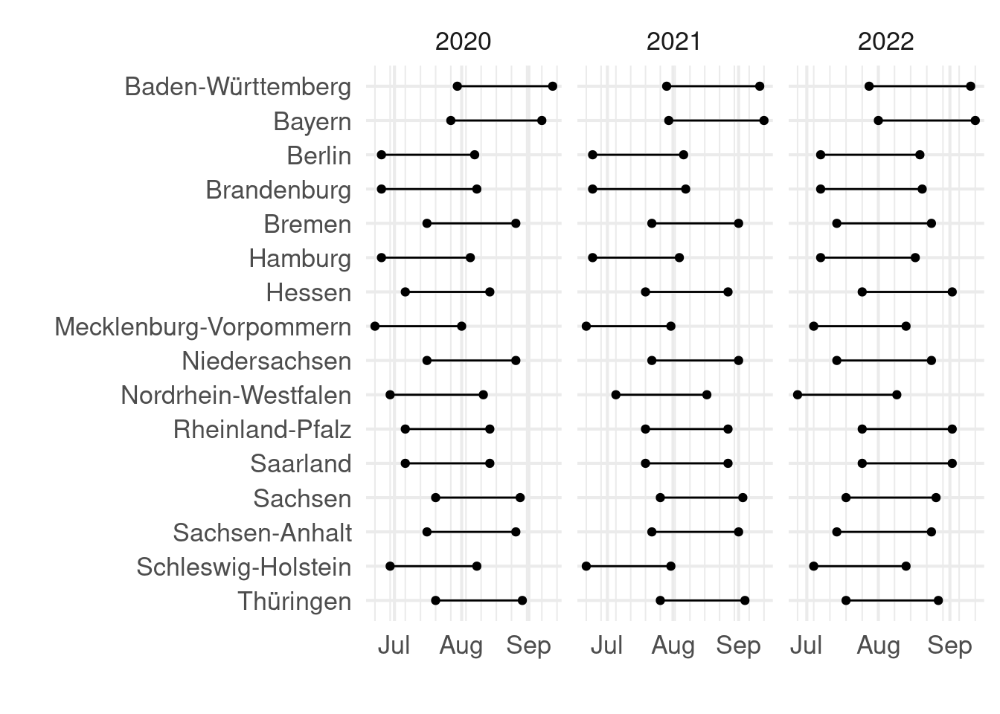
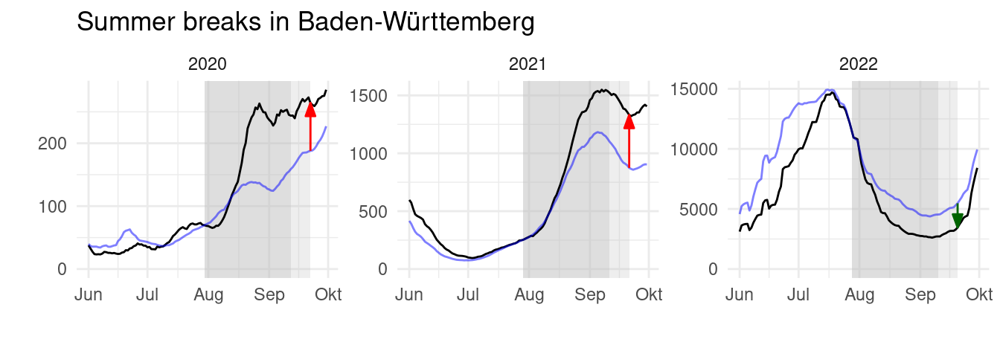
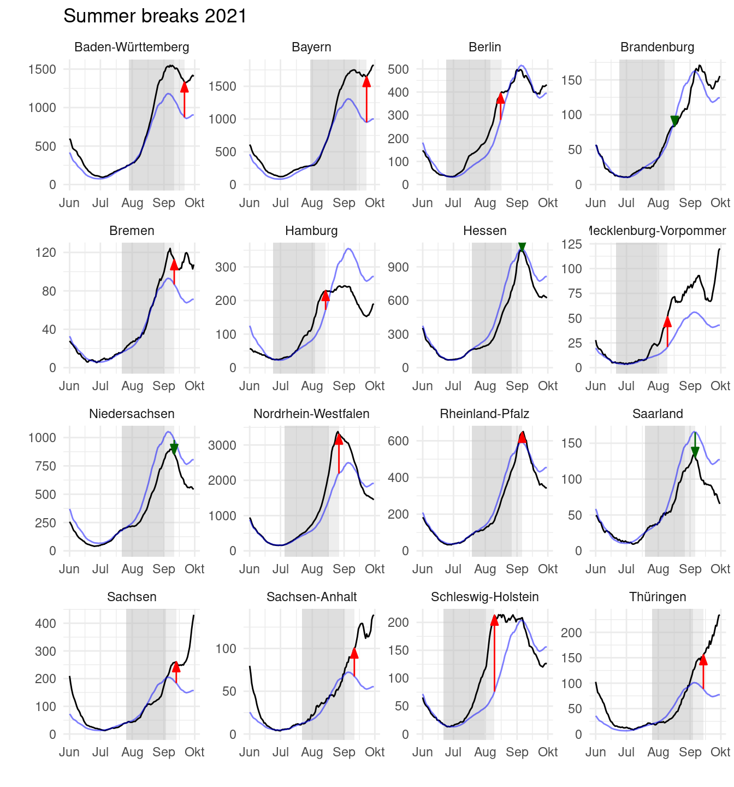
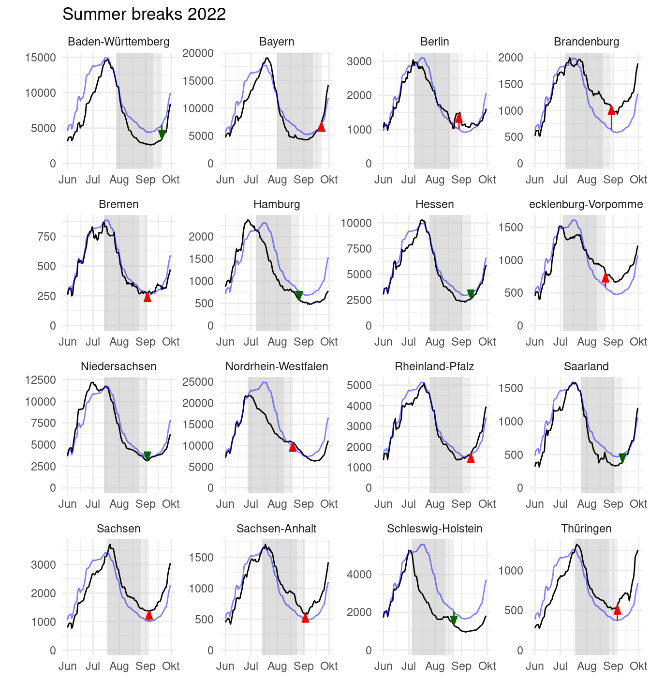
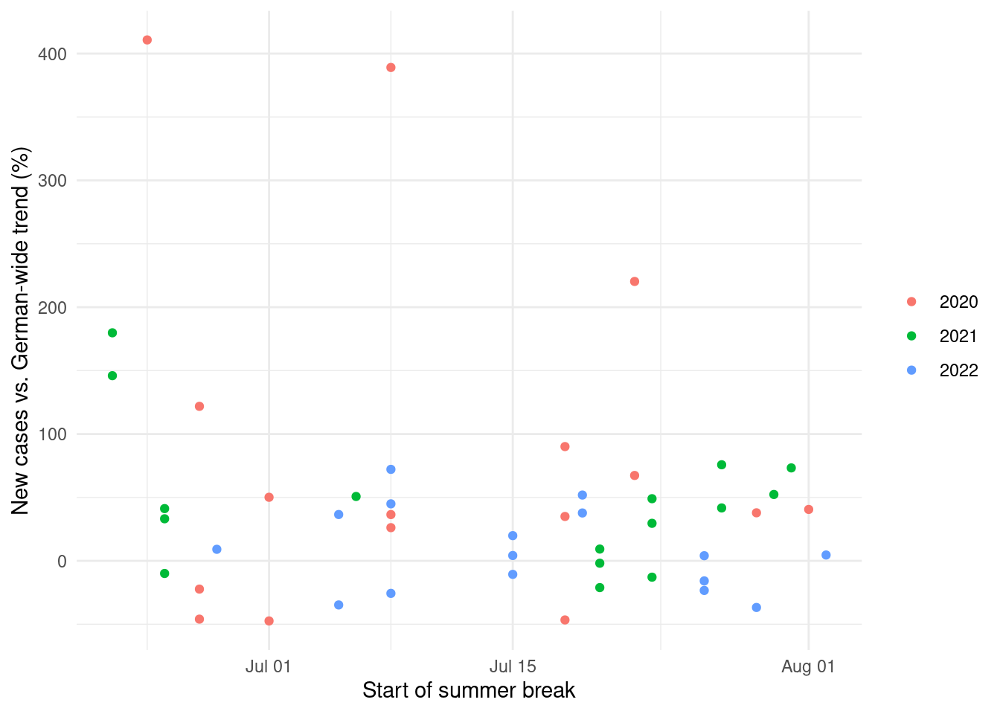

The fate of a pandemic like the CoViD19 pandemic 2020-2022 is determined by the reproductive number which states how many others are infected by a newly infected person on average. Exponential growth or decline of new cases is determined by the reproductive number being above or below one. Small differences in environmental conditions, for example seasonality, can be important to make the difference. Also changes in daily behavior can make a difference. An interesting question is the effect of the summer break in school, because one may think of different consequences:
During summer break kids are not in school as well as many of their parents who take holidays. This cuts off many daily channels of contagion.
On the other hand, families tend to travel during holidays which opens new channels of contagion through contacts while travelling or visits of relatives and friends.
This data analysis uses data from German federal states for the years 2020, 2021 and 2022. Over all, summer breaks in school seem to be more accelerating than decelerating contagion. However, this effect has almost vanished to be inconclusive in 2022 which marks the beginning of the endemic phase in Germany.
2 Data
German summer school holidays differ across the federal states of Germany which produces a natural setting to disentangle the effect of vacation from the general trend of the pandemic.
The dates of the summer breaks are shown in Figure 1.
Code
# These are the packages used in the reportlibrary(tidyverse)library(lubridate)library(sf)# Data# raw data sources, download or documentation, data processing, and saving are done by the script download_data.Rload("data/RKI_vacation_shp.RData")# This loads# RKIstate : 16854 x 3 (stateCode, Refdatum, Fall)# Has new cases (Fall) per federal state (stateCode) per day (Refdatum)# summervac : 48 x 5 # Summer school vacation per federal state (BL=shortcode, Land=name of state, # with start and end date and year# DE_shp : Shape files for maps of federal states # Compute variation of start and end datesvariation <- summervac |>group_by(year) |>summarize(start_variation =max(start) -min(start),end_variation =max(end) -min(end))# Plot of durationssummervac |>pivot_longer(c(start,end)) |>ggplot(aes(x = value, y =fct_rev(Land))) +geom_point() +geom_line() +facet_wrap(~year, scales ="free_x") +scale_x_date(date_minor_breaks ="1 week") +labs(x ="", y ="") +theme_minimal(base_size =16)

Figure 1: Summer school vacations on Germany’s federal states 2020 to 2022.
The ending dates of summer breaks differ by maximally 44 days in 2021 (42 days in 2020, 34 days in 2022).
The effect of summer holidays has to be judged against a general trend. The best available proxy for a general trend is using the new cases in all of Germany, the German-wide trend. Detailed data for regional units in Germany is available through the Robert-Koch-Institut (RKI) at https://github.com/robert-koch-institut/SARS-CoV-2-Infektionen_in_Deutschland. The data is aggregated to new cases per day per federal states. For the following analyses we use seven-day averages to smooth out the typical weekly seasonality of CoViD-19 reporting.
Figure 2 shows the German-wide trends for the months June, July, August and September in 2020, 2021, and 2022. The trajectories of daily new cases (seven-day averages) differ substantially between the years: maximally around 2,000 new cases in 2020; slightly more than 10,000 daily new cases in 2021, and a maximum of almost 100,000 new cases a day in 2022.
Figure 2: General trend of new cases (7 day average) in Germany during the summer months. Note the different values on the y-axis values.
3 Analysis
Figure 3 demonstrates the basic idea of the analysis: For each state-year combination we look how much the summer break increases or decreased the new cases compared with the German-wide trend. To that end, we normalize the German-wide trend such that the new cases in the state and the German-wide trend coincide at the beginning of the holidays.
Code
# Extend the dataset with vacation dataRKIstate_ext <- RKIstate |>mutate(Fall_smooth =smooth_cases(Fall)) |>left_join(RKI_DE, by ="Refdatum") |>left_join(summervac, by =c("year", "stateCode"="BL"))# Make dataset with a normalized trend for each stateRKI <- RKIstate_ext |>filter(Refdatum==start) |>mutate(trend_factor =1/Fall_DE_smooth*Fall_smooth) |>select(stateCode,year,trend_factor) |>right_join(RKIstate_ext, by =c("stateCode", "year")) |>mutate(Trend = Fall_DE_smooth * trend_factor)# Make a dataset with the measure of vacation_effect per year-state# vacation_effect = factor from normalized general Trend to state cases 10 days after vacation end# note that Trend is normalized at vacation startRKI_m <- RKI |>filter(Refdatum == end +10) |>mutate(vacation_effect = Fall_smooth/Trend, dir_color =if_else(vacation_effect <1, "down", "up"))# colors for arrows in figurecolors <-c("up"="red", "down"="darkgreen")RKI |>group_by(year, stateCode) |>filter(stateCode =="BW", month(Refdatum) %in%6:9) |>ggplot(aes(x = Refdatum)) +geom_rect(data = summervac |>filter(BL =="BW") |>mutate(Refdatum = start), aes(xmin = start, xmax = end, ymin =-Inf, ymax =Inf), fill ="gray", alpha =0.5) +geom_rect(data = summervac |>filter(BL =="BW") |>mutate(Refdatum = start), aes(xmin = end, xmax = end +10, ymin =-Inf, ymax =Inf), fill ="gray", alpha =0.25) +geom_line(aes(y = Fall_smooth), color ="black") +geom_line(aes(y = Trend),color ="blue", alpha =0.5) +geom_segment(data = RKI_m |>filter(stateCode =="BW"), aes(yend = Fall_smooth, y = Trend, xend = Refdatum, x = Refdatum, color = dir_color), arrow =arrow(length =unit(0.25,"cm"), type ="closed", angle =20) ) +scale_color_manual(values = colors) +facet_wrap(~year, scales ="free") +expand_limits(y =0) +labs(x="",y="", title ="Summer breaks in Baden-Württemberg") +guides(color ="none") +theme_minimal()

Figure 3: Smoothed new cases for the state of Baden-Württemberg (black line) compared to the German-wide trend (blue) normalized such that case numbers coincide at the first day of summer vacation in school. The vacation range is shown in dark gray. The ligher gray area marks ten day after vacation end. The arrow shows if new cases have increased or decreased ten days after the end of the vacation compared to the German-wide trend.
We measure the increase or decrease as the vacation effect factor\(v\), such that …
One Sample t-test
data: pull(mutate(filter(RKI_m, year == 2020), leff = log(vacation_effect)), leff)
t = 2.1769, df = 15, p-value = 0.04587
alternative hypothesis: true mean is not equal to 0
95 percent confidence interval:
0.007973601 0.755828040
sample estimates:
mean of x
0.3819008
One Sample t-test
data: pull(mutate(filter(RKI_m, year == 2021), leff = log(vacation_effect)), leff)
t = 3.6314, df = 15, p-value = 0.002462
alternative hypothesis: true mean is not equal to 0
95 percent confidence interval:
0.1317241 0.5060840
sample estimates:
mean of x
0.3189041
One Sample t-test
data: pull(mutate(filter(RKI_m, year == 2022), leff = log(vacation_effect)), leff)
t = 0.50806, df = 15, p-value = 0.6188
alternative hypothesis: true mean is not equal to 0
95 percent confidence interval:
-0.1249431 0.2031490
sample estimates:
mean of x
0.03910296
4 Additional visualizations and further analyses with the data
Further analysis then should do:
discuss if the effect was different in 2020, 2021, and 2022
discuss some cases especially those states who deviate from the average answer, what are potential reasons
Figure 5: All federal states in 2020. Panels are as described in the caption of Figure 3.
Code
plot_year(2021)

Figure 6: All federal states in 2021. Panels are as described in the caption of Figure 3.
Code
plot_year(2022)

Figure 7: All federal states in 2022. Panels are as described in the caption of Figure 3.
Code
RKI_m |>ggplot(aes(as_date(yday(start)), 100*(vacation_effect-1), color =factor(year))) +geom_point() +labs(x ="Start of summer break", y ="New cases vs. German-wide trend (%)") +theme_minimal() +theme(legend.title=element_blank())

Figure 8: The beginning of he summer break and the effect are unrelated.
Figure 9: The effect does not show a clear geographic pattern.
5 Conclusion
Discuss generalizability of results. Probably limited but possible if another pandemic has similar proporties.
6 Interactive Visualization / Data Dashboard
It should be possible to make a dashboard with selection of states and years and perhaps also some dynamic state rankings.
7 Data Source
Probably necessary.
References
Source Code
---title: "The summer break effect on the CoViD-19 in Germany 2020-2022"author: "Jan Lorenz"date: "Mon, Dec 2, 2023"format: html: toc: true # This creates the table of context menu toc-depth: 2 # Increase if you want to have subsections in the table of context menu number-sections: true code-fold: true code-tools: truebibliography: references.bib---## OutlineThe fate of a pandemic like the CoViD19 pandemic 2020-2022 is determined by the reproductive number which states how many others are infected by a newly infected person on average. Exponential growth or decline of new cases is determined by the reproductive number being above or below one. Small differences in environmental conditions, for example seasonality, can be important to make the difference. Also changes in daily behavior can make a difference. An interesting question is the effect of the summer break in school, because one may think of different consequences:- During summer break kids are not in school as well as many of their parents who take holidays. This cuts off many daily channels of contagion. - On the other hand, families tend to travel during holidays which opens new channels of contagion through contacts while travelling or visits of relatives and friends. This data analysis uses data from German federal states for the years 2020, 2021 and 2022. Over all, summer breaks in school seem to be more accelerating than decelerating contagion. However, this effect has almost vanished to be inconclusive in 2022 which marks the beginning of the endemic phase in Germany. ## DataGerman summer school holidays differ across the federal states of Germany which produces a natural setting to disentangle the effect of vacation from the general trend of the pandemic. The dates of the summer breaks are shown in @fig-vacation. ```{r}#| label: fig-vacation#| fig-cap: "Summer school vacations on Germany's federal states 2020 to 2022."#| message: false# These are the packages used in the reportlibrary(tidyverse)library(lubridate)library(sf)# Data# raw data sources, download or documentation, data processing, and saving are done by the script download_data.Rload("data/RKI_vacation_shp.RData")# This loads# RKIstate : 16854 x 3 (stateCode, Refdatum, Fall)# Has new cases (Fall) per federal state (stateCode) per day (Refdatum)# summervac : 48 x 5 # Summer school vacation per federal state (BL=shortcode, Land=name of state, # with start and end date and year# DE_shp : Shape files for maps of federal states # Compute variation of start and end datesvariation <- summervac |>group_by(year) |>summarize(start_variation =max(start) -min(start),end_variation =max(end) -min(end))# Plot of durationssummervac |>pivot_longer(c(start,end)) |>ggplot(aes(x = value, y =fct_rev(Land))) +geom_point() +geom_line() +facet_wrap(~year, scales ="free_x") +scale_x_date(date_minor_breaks ="1 week") +labs(x ="", y ="") +theme_minimal(base_size =16)```The ending dates of summer breaks differ by maximally `r variation |> filter(year==2021) |> pull(end_variation)` days in 2021 (`r variation |> filter(year==2020) |> pull(end_variation)` days in 2020, `r variation |> filter(year==2022) |> pull(end_variation)` days in 2022).The effect of summer holidays has to be judged against a general trend. The best available proxy for a general trend is using the new cases in all of Germany, the German-wide trend. Detailed data for regional units in Germany is available through the Robert-Koch-Institut (RKI) at<https://github.com/robert-koch-institut/SARS-CoV-2-Infektionen_in_Deutschland>. The data is aggregated to new cases per day per federal states. For the following analyses we use seven-day averages to smooth out the typical weekly seasonality of CoViD-19 reporting. @fig-generaltrend shows the German-wide trends for the months June, July, August and September in 2020, 2021, and 2022. The trajectories of daily new cases (seven-day averages) differ substantially between the years: maximally around 2,000 new cases in 2020; slightly more than 10,000 daily new cases in 2021, and a maximum of almost 100,000 new cases a day in 2022. ```{r}#| label: fig-generaltrend#| fig-cap: "General trend of new cases (7 day average) in Germany during the summer months. Note the different values on the y-axis values." smooth_cases <-function(x) (x +lag(x,1) +lag(x,2) +lag(x,3) +lag(x,4) +lag(x,5) +lag(x,6))/7RKI_DE <- RKIstate |>group_by(Refdatum) |>summarise(Fall_DE =sum(Fall)) |>mutate(Fall_DE_smooth =smooth_cases(Fall_DE),year =year(Refdatum))RKI_DE |>filter(month(Refdatum) %in%6:9) |>ggplot(aes(Refdatum,Fall_DE_smooth)) +geom_line() +facet_wrap(~year, scales ="free", nrow =3) +theme_minimal() +expand_limits(y =0) +labs(x="",y="")```## Analysis @fig-example-BW demonstrates the basic idea of the analysis: For each state-year combination we look how much the summer break increases or decreased the new cases compared with the German-wide trend. To that end, we normalize the German-wide trend such that the new cases in the state and the German-wide trend coincide at the beginning of the holidays. ```{r}#| label: fig-example-BW#| fig-cap: "Smoothed new cases for the state of Baden-Württemberg (black line) compared to the German-wide trend (blue) normalized such that case numbers coincide at the first day of summer vacation in school. The vacation range is shown in dark gray. The ligher gray area marks ten day after vacation end. The arrow shows if new cases have increased or decreased ten days after the end of the vacation compared to the German-wide trend." #| fig-height: 2.4# Extend the dataset with vacation dataRKIstate_ext <- RKIstate |>mutate(Fall_smooth =smooth_cases(Fall)) |>left_join(RKI_DE, by ="Refdatum") |>left_join(summervac, by =c("year", "stateCode"="BL"))# Make dataset with a normalized trend for each stateRKI <- RKIstate_ext |>filter(Refdatum==start) |>mutate(trend_factor =1/Fall_DE_smooth*Fall_smooth) |>select(stateCode,year,trend_factor) |>right_join(RKIstate_ext, by =c("stateCode", "year")) |>mutate(Trend = Fall_DE_smooth * trend_factor)# Make a dataset with the measure of vacation_effect per year-state# vacation_effect = factor from normalized general Trend to state cases 10 days after vacation end# note that Trend is normalized at vacation startRKI_m <- RKI |>filter(Refdatum == end +10) |>mutate(vacation_effect = Fall_smooth/Trend, dir_color =if_else(vacation_effect <1, "down", "up"))# colors for arrows in figurecolors <-c("up"="red", "down"="darkgreen")RKI |>group_by(year, stateCode) |>filter(stateCode =="BW", month(Refdatum) %in%6:9) |>ggplot(aes(x = Refdatum)) +geom_rect(data = summervac |>filter(BL =="BW") |>mutate(Refdatum = start), aes(xmin = start, xmax = end, ymin =-Inf, ymax =Inf), fill ="gray", alpha =0.5) +geom_rect(data = summervac |>filter(BL =="BW") |>mutate(Refdatum = start), aes(xmin = end, xmax = end +10, ymin =-Inf, ymax =Inf), fill ="gray", alpha =0.25) +geom_line(aes(y = Fall_smooth), color ="black") +geom_line(aes(y = Trend),color ="blue", alpha =0.5) +geom_segment(data = RKI_m |>filter(stateCode =="BW"), aes(yend = Fall_smooth, y = Trend, xend = Refdatum, x = Refdatum, color = dir_color), arrow =arrow(length =unit(0.25,"cm"), type ="closed", angle =20) ) +scale_color_manual(values = colors) +facet_wrap(~year, scales ="free") +expand_limits(y =0) +labs(x="",y="", title ="Summer breaks in Baden-Württemberg") +guides(color ="none") +theme_minimal()```We measure the increase or decrease as the *vacation effect factor* $v$, such that ... ```{r}#| label: fig-main-effect#| fig-cap: "Change from summer break start to ten days after summer break end, compared to the German-wide trend."RKI_m |>mutate(eff_ch = vacation_effect-1,lab_x =pmax(0,eff_ch),eff_lab =paste0(if_else(vacation_effect>1,"+",""),round(100*(vacation_effect-1), digit=1),"%")) |>ggplot(aes(eff_ch, fct_rev(Land), label = eff_lab, fill = dir_color)) +geom_col() +geom_text(aes(x=lab_x), hjust=0, nudge_x =0.2) +facet_wrap(~year) +xlim(c(-0.5,7.5)) +scale_fill_manual(values = colors) +labs(x="", y="", title ="Summer break effect") +guides(fill="none") +theme_minimal(base_size =16) +theme(panel.grid.major.x =element_blank(),panel.grid.major.y =element_blank(),panel.grid.minor.x =element_blank(),axis.ticks =element_blank(),axis.text.x =element_blank())``````{r}RKI_m |>filter(year ==2020) |>mutate(leff =log(vacation_effect)) |>pull(leff) |>t.test()RKI_m |>filter(year ==2021) |>mutate(leff =log(vacation_effect)) |>pull(leff) |>t.test()RKI_m |>filter(year ==2022) |>mutate(leff =log(vacation_effect)) |>pull(leff) |>t.test()```## Additional visualizations and further analyses with the dataFurther analysis then should do: - discuss if the effect was different in 2020, 2021, and 2022- discuss some cases especially those states who deviate from the average answer, what are potential reasons```{r}#| label: fig-2020#| fig-cap: "All federal states in 2020. Panels are as described in the caption of @fig-example-BW." #| fig-height: 7.5plot_year <-function(y) RKI |>group_by(year, stateCode) |>filter(year == y, month(Refdatum) %in%6:9) |>ggplot(aes(x = Refdatum)) +geom_rect(data = summervac |>filter(year == y) |>mutate(stateCode = BL, Refdatum = start), aes(xmin = start, xmax = end, ymin =-Inf, ymax =Inf), fill ="gray", alpha =0.5) +geom_rect(data = summervac |>filter(year == y) |>mutate(stateCode = BL, Refdatum = start), aes(xmin = end, xmax = end +10, ymin =-Inf, ymax =Inf), fill ="gray", alpha =0.25) +geom_line(aes(y = Fall_smooth), color ="black") +geom_line(aes(y = Trend),color ="blue", alpha =0.5) +geom_segment(data = RKI_m |>filter(year == y), aes(yend = Fall_smooth, y = Trend, xend = Refdatum, x = Refdatum, color = dir_color), arrow =arrow(length =unit(0.25,"cm"), type ="closed", angle =20) ) +scale_color_manual(values = colors) +facet_wrap(~Land, scales ="free", nrow =4) +expand_limits(y =0) +labs(x="",y="", title=paste("Summer breaks",y)) +guides(color ="none") +theme_minimal()plot_year(2020)``````{r}#| label: fig-2021#| fig-cap: "All federal states in 2021. Panels are as described in the caption of @fig-example-BW." #| fig-height: 7.5plot_year(2021)``````{r}#| label: fig-2022#| fig-cap: "All federal states in 2022. Panels are as described in the caption of @fig-example-BW." #| fig-height: 7.5plot_year(2022)``````{r}#| label: fig-start-effect#| fig-cap: "The beginning of he summer break and the effect are unrelated."RKI_m |>ggplot(aes(as_date(yday(start)), 100*(vacation_effect-1), color =factor(year))) +geom_point() +labs(x ="Start of summer break", y ="New cases vs. German-wide trend (%)") +theme_minimal() +theme(legend.title=element_blank())``````{r}#| label: fig-map-effect#| fig-cap: "The effect does not show a clear geographic pattern."DE_shp |>right_join(RKI_m, by =c("NAME_1"="Land")) |>ggplot(aes(fill=100*(vacation_effect-1))) +geom_sf() +facet_wrap(~year) +scale_fill_gradient2(low ="blue",mid ="white",high ="red",midpoint =0,name ="Change (%)" ) +theme_void()```## ConclusionDiscuss generalizability of results. Probably limited but possible if another pandemic has similar proporties. ## Interactive Visualization / Data Dashboard {.appendix}It should be possible to make a dashboard with selection of states and years and perhaps also some dynamic state rankings. ## Data Source {.appendix}Probably necessary. ## References {.unnumbered .appendix}::: {#refs}:::